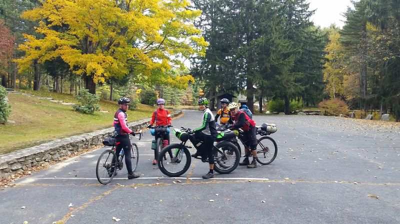
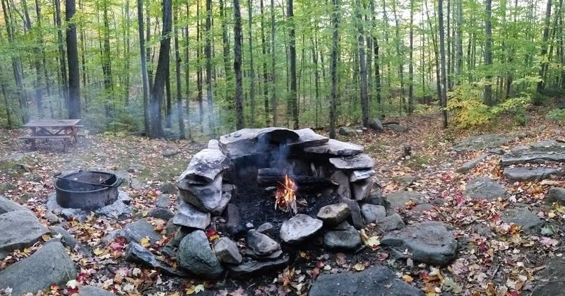
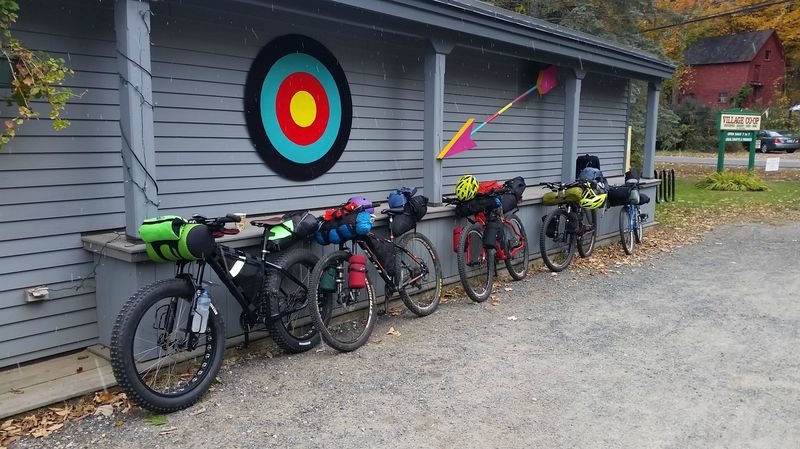
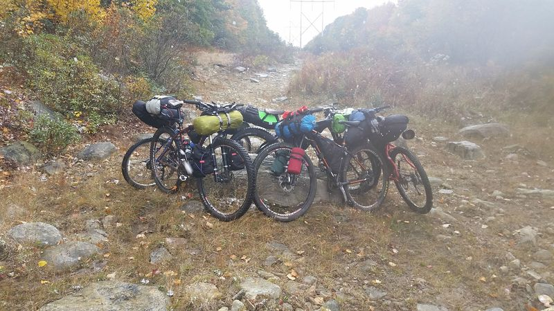

This weekend we had the fun task of dragging people out into the woods with heavy bikes and making them camp in the cold. We had some first time bikepackers, inexperienced mountain bikers, a cross bike rider, and a GDMBR veteran. The best part? Everyone made it out safely and with an awesome trip under their belt.
We started the trip at Amethyst Brook in Amherst Massachusetts and set our sights on Wendell State Forest. The route followed some of the old M&M trail, Robert Frost trail, and random fire/utility roads. After a bit of planning, riding, re-routing, and other fine tuning, the route was near perfect. After some socializing and getting to know everyone in the group we took off.
The first half of the ride went excellent. One of the riders (who bikes ~15 miles from home to the trail start) fought cramps up one of the climbs, but even with this struggle the spirits of him and group were still soaring. Everyone fell into a synched pace and there was no tension to go faster or longer, we stopped when we wanted to take a break and cranked when we wanted to crank.
To finish off the first part of the ride we rolled in to the Leverett Co-op. This co-op is at the bottom of Rattlesnake Gutter Rd. which is an excellent gravel descent. After conquering the final climb for the day the co-op was a great reward. They co-op has been very generous to me on my many trips passing through. Bottle fills, bathroom breaks, and excellent choice of food and drinks. They're always thankful for the business and I'm thankful they let me come through smelling like campfire and sweat.
After everyone was sufficiently refueled we finished the last stretch of road and trail to arrive at Wendell State Forest. Everyone made it to the camp without incident and with plenty of excitement. The riding was good, the temps were perfect, and now we get to relax after a day of work.
Our next task was to get settled in to camp. We started by deciding what to do about sleeping. We had the option of the Adirondack shelter (my favorite) or our own tents. We ended up settling on our own tents and found a spot tucked away in a corner to set camp. After our tents were set we hiked down to the Adirondack shelter to hang out for fire, food, and water filtering from the nearby stream. I love this place.
The forecast leading up to the trip was up and down. We packed for rain, but escaped without. There were on and off sleet/snow showers over night and the morning was certainly chilly. I opted to lay around in the tent a bit later, but I heard everyone up bright and early for coffee. I wish I would have gotten a picture of the coffee setups everyone had. We were definitely in gear nerd territory.

After clearing out of camp we rolled out back down to the Leverett Co-op. While eating breakfast, after telling everyone I really wanted it to snow, someone from the group pointed for me to look out the window. Snow! There was another cycling event passing through so we all in our bike gear were outside taking in the experience of the years first snowfall. Of course, we all had our cameras out and snapping to document it...
The trip back went as smooth as the trip up. We backtracked the same route, but rerouted for a rocky exposed section just east of Rattlesnake Gutter. The group was feeling adventurous though we all walked the trail at one point or another. The snow fell a bit heavier at the top of this section and the route became just that much more fun.
The snow continued to fall through most of the return trip, but not enough to be an issue. Generally I find out-and-back routes to be a little boring. Fortunately, the somewhat technical nature of a few of the climbs, and the generally adventurous nature of our group even the return was a blast.
As everyone became a bit more comfortable with their setup the group started changing. The order of people to the tops of climbs changed and the order of the first down the descents. Armed with a new confidence from yesterdays ride, and a bit of ruggedness from spending the night outdoors we finished the ride. Everyone exchanged contact information and we parted ways. I know everyone can't wait until the next PV Bikepacking trip! Maybe a winter trip is in order?
